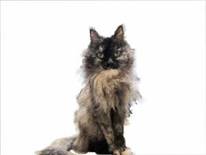
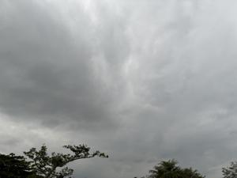
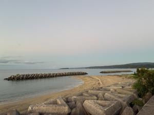
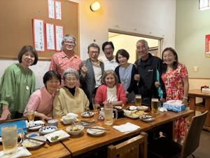

うるがいの話 ある日
最新: 同級生会続き【うるがいの話 ある日】とは 一日だけのプログです
『うるがいの話』の最新一日だけのプログで、通信料が少なく経済的だ。カニの画像をクリックすると全ての日付が載る『うるがいの話』サイトを表示します
|
|
【うるがいの話】 うるがい(ｳﾙｶﾞｲ urugai)とは、『もずくがに』の名前でとても大きくなります。 |
|---|---|
|
 |
【カミマヤーの話】 猫のことを方言でマヤーといいます。カミマヤー（kamimayaa）とは、神の猫のことです。 |
|
【たながぁの音楽】 たながぁ（ﾀﾅｶﾞｰ tanagaa）とは手長えびのことで、何種類かあり大きいのは車 エビぐらいになります。 |

|
【ぶながぁの話】 ぶながぁ(ﾌﾞﾅｶﾞｰ bunagaa)とは、赤い髪の毛、赤い身体、そして身長は１ｍ２０ｃｍ ぐらい、川の蟹を食べているの目撃された。場所は沖縄県国頭郡大宜味村のと ある村僕の隣近所に住んでいる爺さんから、聞いた話です。 |
|
|
【ギーマの話】 ギーマ(giima)とは、山原の里山に咲くスズランに似た、 花を付けます。実は食べられます、 気が付くと口の周りが紫になっています。 |
2026年11月19日 (木）同級生会続き
18:07

ツネは未婚であった、『高校の時の彼女とは時々ラインしてい
るヨ』とそうかと頷く、すると『言わないといけない、そ、こ
んなのは言わないと』と幹事のスミヨが言う。『ミチエ１０月
２日に亡くなった』、ん！！、『ラインはね亡くなっても残る
から・・・、９月には女性達でドリカムのコンサートへ行った
のにね』。ミチエは、私と同じ誕生日で、かつ、ツネが本土に
行くのを那覇空港で一緒に見送り、山原にはバスで一緒に帰っ
た仲だった。
カズヨシ、脳卒中になって車の運転はダメだけど自転車を乗っ
て通勤していると言う。３年生のとき、赤点取りたくないと私
の家に徹夜で勉強、母親が朝食を作ってくれた仲だった。
会は奥間ビーチのある村です、写真から見える半島が奥間ビー
チ

男性４名、女性６名、うち那覇、浦添市、宜野湾市、千葉がそ
れぞれ一人、残りは山原在留である（多分）。居酒屋みーやー
は、畑に囲まれたところにあった。看板がないっす、ここは『
みーやー』ですかと、お店の人に確認した。私は、早々に２時
間で退散、すると元彼女が、駐車場まで一緒に来てくれて、お
互いの車を確認するどうでもいい会話をしたあと、彼女が見送
った。記念写真が欲しいため、幹事とライン登録し写真を送っ
てもらいました。彼女とのペアの写真は、私のスマホで撮って
もらいました。写真をみながら、いろいろ、考える今日この頃
です（１キロほど痩せましたよ）。４８年前・・・・、私の名
前は、いまだに高校時代からのあーちゃんとあだ名で呼ばれま
す。恐らく一生だべ
